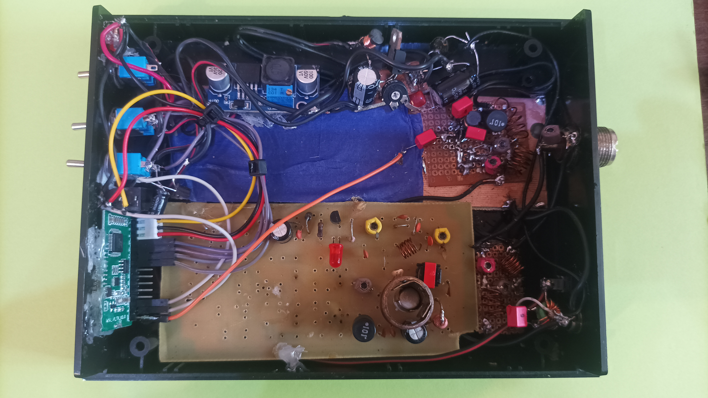

Na wstępie muszę poinformować iż autor nie ponosi odpowiedzialnosci za budowę oraz używanie tego typu konstrukcji. W Polsce zabronione jest nadawanie za pomocą samodzielnie skonstruowanych urzadzeń. Dopuszcza się jedynie testowanie sprzetu za pomocą sztucznego obciążenia. Nie dopuszczalne jest urzywanie urzadzeń z antenami!!!!
Jak zacząć budować urzadzenie? Potrzebujemy gotowy transmiter samochodowy lub jakiś oparty o chip QN8027 który to umożliwia emitowanie sygnału wzbogaconego w koder RDS oraz nadawanie w szerokim paśmie 88-108MHz.
Modół nadajnikaWyjscie antenowe układu podłączany do chipu, następnie do układu MSA 11-05, który to jest wzmacniaczem szerokopasmowym i umożliwia podniesienie mocy do poziomu, który umożliwi wysterowanie tranzystora w końcówce mocy.
Układ wzmacjiacza MSA11-05Montujemy wszystko w całość, końcówka mocy to tranzystor QN8027 który umożiwi wygenerowanie około 1W mocy na wyjsciu. Należy pamiętać o wykoaniu filtórw, aby wyciąć częstotliwosci harmoniczne, pozwoli to na bezproblemową prace układu oraz niegenerowanie zakłuceń.
 Nadajnik w obudowiePo zmontowaniu wszystkiego, mozemy pokusić się o uruchomienie układu, do tego potrzebujemy klika rzeczy a mianowicie: SWR miarki a także sztucznego obciązenia do strojenia końcówki mocy. Nie należy uruchamiać układu bez obciązenia 50 Ohm, gdyż grozi to uszkodzeniem tranzystora w końcówce mocy.
Miernik SWR oraz PWRSztuczne obciażenie wykonane jest z 20 rezystorów o mocy 0,25W oraz oporze 1k Ohm co daje nam 4W oraz rezystancjhe wypadkową włąsnie 50 Ohm.
 Sztuczne obciążenie 4W
Sztuczne obciążenie 4W
Uruchomaienie nadajnika
Gdy wszystko jest podłączone, możemy podać napięcie zasilania. Należałoby obserwować prąd płynący w obwodach aby nigdzie nie było zwarcia, w przypadku stwierdzenia takowego należy wyłączyć ukłąd i ponownie przeanalizowac połączenia.
Układ stroimy na maksymalny wychył SWR miarki ustawianej na pomiar mocy.
Proces strojenia jest żmudny i wymaga wielu prób, aby uzyskać porzadany efekt. Strojenie każdego bloku należy powtórzyć kilkukrotnie, ponieważ układy oddziałują na siebie. Poprawne działąnie urzadzenia jest nagrodą za cierpliwość przy procesie budowy oraz strojenia nadajnika.Gotowy nadajnik w obudowie
Bonus
Jeżeli potrzeba większej mocy, to można wykorzystać tranzystor KT907A i wykonać na nim stopień mocy, który bedzie podłączany do naszego nadajnika, Nadajnik ten bedzie pracował jako driver.
Układ ten należy zasilać z napięcia 24V. Moc, jaka możliwa jest do uzyskania na wyjsciu to 12W. Strojenie układu jest równie żmudne jak ustwaienie samego nadajnika i przeprowadza się je identycznie.
Wzmacniacz 12WUkłady pokazane w artykule są tylko w celech edukacyjnych i autor nie bierze odpowiedzialnosci za próby naśladowania oraz nie namawia do jego konstruowania.